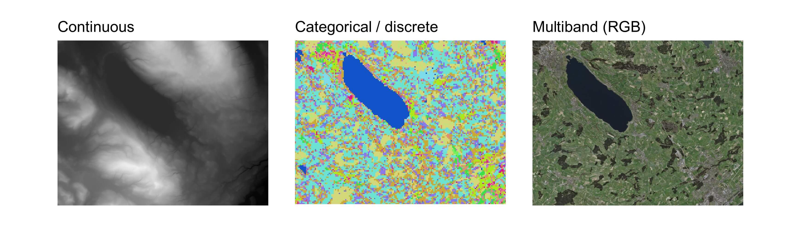
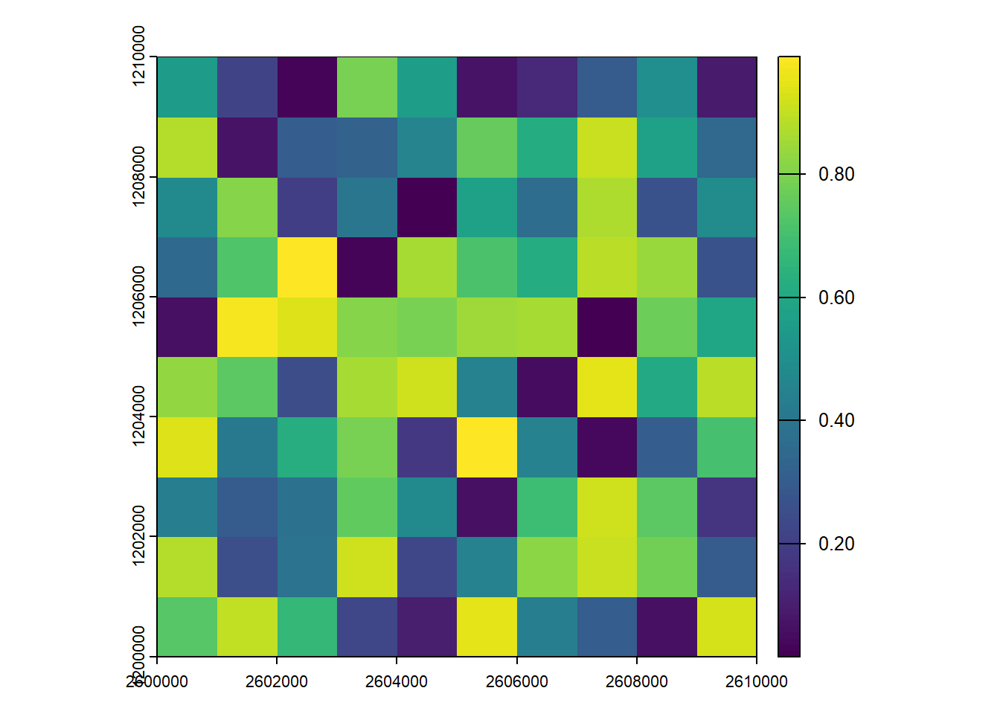
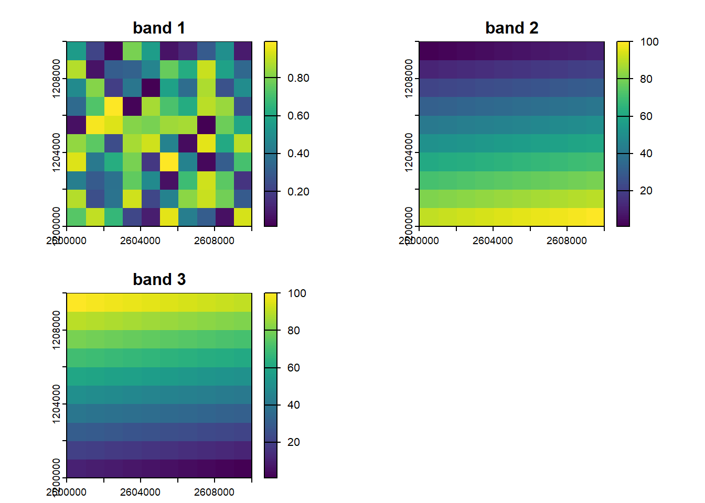

library(terra)3 Raster data
3.1 Raster data model
As we saw above, a raster data set is basically an image, which is the same as a grid of pixels. These pixels are often called cells. Most raster data sets you will encounter will have square (or maybe rectangular) cells with a constant size (also called resolution), and we will only focus on these in this tutorial. However don’t forget that other kind of grids, for example sheared or curvilinear ones, also exist. This is sometimes needed depending on the coordinate reference system used to store the data, or can be caused by some reprojections.
Rasters are perfect for storing continuous values contained in a large area (called the extent of the raster). Digital elevation models are a typical example of such data, each cell is used to store an elevation value. You will also find rasters containing discrete values, these are often used to store landcover or landuse data sets. Note that, unlike vector data, it is impossible to store overlapping features in the same data set.
We saw that vector data sets can store multiple attributes for a single feature. We can use a similar technique for raster data sets with the help of raster bands. You can think of raster bands as different layers of the same grid, each layer containing a different information. This is mainly use for spectral data, for example the red, green and blue intensity values in an aerial picture; satellite imagery will have even more bands depending on the number of sensors. Multiband rasters are also often used to store environment variables that change through time (e.g. a temperature raster, with one band per day). Such rasters are often called datacubes.

Performing computations on raster data sets is usually very efficient and faster than using vector data. This is due to the fact that rasters are stored in some kind of matrix formats with some extra information such as the coordinate reference system and the origin of the raster. It this thus possible to use highly efficient linear algebra libraries. The mathematical operations performed on raster cells are called map algebra.
3.2 Raster data in R
We will use the terra package to work with raster data. This package has everything needed to import, analyse, visualize and export raster data sets. Like the sf package, it is also using the GDAL library for the import/export operations, which means it can open almost every raster data format. Unlike the sf package, terra will usually not import the full data sets in memory but only create a pointer to the data and then read smaller blocks of data successively. This allows working with very large rasters with a relatively small memory footprint. We’ve already seen that terra stores vector data inside SpatVector objects, similarly it stores raster data inside objects called SpatRaster. The amount of functions available in the terra package is similar to typical GIS software.
A bit of history
A revolution happened in 2010 in the small world of R-spatial when the raster package was released. People were able to perform analyses using raster data sets in R instead of using a standard GIS software. The package has been maintained during many years, and many functions were added. However its developer decided to create a new package from scratch in order to improve speed and memory efficiency, the terra package was born. You will often find a lot of R code using the raster package on the web. Fortunately it is quite easy to adapt code written for the raster package to terra. The functions have similar names (sometimes even identical) and everything that was available in raster should also be available in terra. Actually the recent versions of raster even uses terra in the background instead of the original raster code.
There is another famous R package to process raster data, the stars package. It is especially useful if you need to work with “irregular” rasters (sheared, curvilinear, etc.) or with complex datacubes. It is also tidyverse-friendly and the syntax is closed to the one used in sf. However the number of available functions is (still) much lower than in terra. If you need to use both packages, it is fortunately easy to convert raster objects from terra to stars (using the function st_as_stars()), and the other way round (using the function rast()).
3.3 Structure of SpatRaster objects
Even though we will most often create SpatRaster objects by importing some existing raster data set, it is useful to create one from scratch to better understand how they’re structured. We do this using the rast() function, specifying the desired number of rows and columns, the extent of the raster as well as a coordinate reference system. The next code block creates an empty raster somewhere in Switzerland.
r <- rast(nrow = 10, ncol = 10, xmin = 2600000, xmax = 2610000, ymin = 1200000, ymax = 1210000, crs = "EPSG:2056")
rclass : SpatRaster
dimensions : 10, 10, 1 (nrow, ncol, nlyr)
resolution : 1000, 1000 (x, y)
extent : 2600000, 2610000, 1200000, 1210000 (xmin, xmax, ymin, ymax)
coord. ref. : CH1903+ / LV95 (EPSG:2056) Printing a SpatRaster object shows some general information about the raster data set such as dimensions, resolution and extent. Note that the resolution was automatically computed since we provided the dimensions and the extent of the new raster. All the raster geometric properties (number of cells, dimensions, extent, resolution etc.) can also be extracted using specific functions.
ncell(r)[1] 100dim(r)[1] 10 10 1ext(r)SpatExtent : 2600000, 2610000, 1200000, 1210000 (xmin, xmax, ymin, ymax)c(xmin(r), xmax(r), ymin(r), ymax(r))[1] 2600000 2610000 1200000 1210000res(r)[1] 1000 1000As I mentioned above, terra usually doesn’t import the full data set in memory but only create a pointer to the data stored on your computer. You can extract the reference to the data file using the sources() function. Since we create our raster from scratch, our SpatRaster object is of course not linked to any file and the whole object is stored in memory.
sources(r)[1] ""inMemory(r)[1] TRUEOnce we have a SpatRaster object, we can easily modify its geometry. For example we can change its resolution using the res() function and terra will automatically modify the dimensions of the raster.
rmod1 <- r
res(rmod1) <- 100
rmod1class : SpatRaster
dimensions : 100, 100, 1 (nrow, ncol, nlyr)
resolution : 100, 100 (x, y)
extent : 2600000, 2610000, 1200000, 1210000 (xmin, xmax, ymin, ymax)
coord. ref. : CH1903+ / LV95 (EPSG:2056) If the desired resolution is not compatible with the available extent, then terra will also automatically adapt the extent.
res(rmod1) <- 900
rmod1class : SpatRaster
dimensions : 11, 11, 1 (nrow, ncol, nlyr)
resolution : 900, 900 (x, y)
extent : 2600000, 2609900, 1200000, 1209900 (xmin, xmax, ymin, ymax)
coord. ref. : CH1903+ / LV95 (EPSG:2056) We can also provide two values to the res() function to create rectangular cells…
res(rmod1) <- c(2000, 1000)
rmod1class : SpatRaster
dimensions : 10, 5, 1 (nrow, ncol, nlyr)
resolution : 2000, 1000 (x, y)
extent : 2600000, 2610000, 1200000, 1210000 (xmin, xmax, ymin, ymax)
coord. ref. : CH1903+ / LV95 (EPSG:2056) Instead of changing the resolution, we can also modify the dimensions of the raster using the nrow() and ncol() (or dim()) functions. The resolution will be adapted automatically to maintain the defined extent.
rmod2 <- r
ncol(rmod2) <- 9
nrow(rmod2) <- 5
rmod2class : SpatRaster
dimensions : 5, 9, 1 (nrow, ncol, nlyr)
resolution : 1111.111, 2000 (x, y)
extent : 2600000, 2610000, 1200000, 1210000 (xmin, xmax, ymin, ymax)
coord. ref. : CH1903+ / LV95 (EPSG:2056) Until now we’ve only had a look on the geometry of SpatRaster objects. The raster objects we’ve created have cells but these are empty, they don’t store any values. We can assign values to a SpatRaster object using the values() function (note that we can use the same function to extract the cell values).
values(r) <- runif(ncell(r))
rclass : SpatRaster
dimensions : 10, 10, 1 (nrow, ncol, nlyr)
resolution : 1000, 1000 (x, y)
extent : 2600000, 2610000, 1200000, 1210000 (xmin, xmax, ymin, ymax)
coord. ref. : CH1903+ / LV95 (EPSG:2056)
source(s) : memory
name : lyr.1
min value : 0.01638269
max value : 0.99074772 plot(r)
Printing the object now shows some summary information on the values as well. Also note that the values were assigned to the cells using cell order, that is, from the top left cell to the top right and then down by row. To view the cell order of the raster, you can use the cells() function.
plot(r)
text(r, labels = cells(r), halo = TRUE)If you change the number of rows or columns of a raster, you will lose the values associated to the SpatRaster object since the number of cells is changing. This doesn’t happen if you change the extent only. Here’s a quick example:
rmod3 <- r
xmax(rmod3) <- 2620000
hasValues(rmod3)[1] TRUEnrow(rmod3) <- 5
hasValues(rmod3)[1] FALSEIf you need to create a multiband raster, you can simply use the c() function to combine several SpatRaster objects into a single one. Note that they need to have the exact same geometric properties. You can use the names() function to change (or extract) the names of the bands.
r2 <- r
r3 <- r
values(r2) <- 1:ncell(r)
values(r3) <- ncell(r):1
s <- c(r, r2, r3)
names(s) <- c("band 1", "band 2", "band 3")
sclass : SpatRaster
dimensions : 10, 10, 3 (nrow, ncol, nlyr)
resolution : 1000, 1000 (x, y)
extent : 2600000, 2610000, 1200000, 1210000 (xmin, xmax, ymin, ymax)
coord. ref. : CH1903+ / LV95 (EPSG:2056)
source(s) : memory
names : band 1, band 2, band 3
min values : 0.01638269, 1, 1
max values : 0.99074772, 100, 100 plot(s)
If you need to extract one or more bands, you can index your SpatRaster objects using double square brackets and the numbers or the names of the desired bands.
s[[2]]class : SpatRaster
dimensions : 10, 10, 1 (nrow, ncol, nlyr)
resolution : 1000, 1000 (x, y)
extent : 2600000, 2610000, 1200000, 1210000 (xmin, xmax, ymin, ymax)
coord. ref. : CH1903+ / LV95 (EPSG:2056)
source(s) : memory
name : band 2
min value : 1
max value : 100 s[["band 2"]]class : SpatRaster
dimensions : 10, 10, 1 (nrow, ncol, nlyr)
resolution : 1000, 1000 (x, y)
extent : 2600000, 2610000, 1200000, 1210000 (xmin, xmax, ymin, ymax)
coord. ref. : CH1903+ / LV95 (EPSG:2056)
source(s) : memory
name : band 2
min value : 1
max value : 100
Rasters and R workspaces
Since terra only stores a pointer to the raster data set, this means the actual data set won’t be included if you save your session in an R workspace (.Rdata files). If you really want to include it in your workspace, you can use the wrap() function. Note that this is also needed if you want to pass raster data over a connection that serializes, e.g. to a computer cluster.